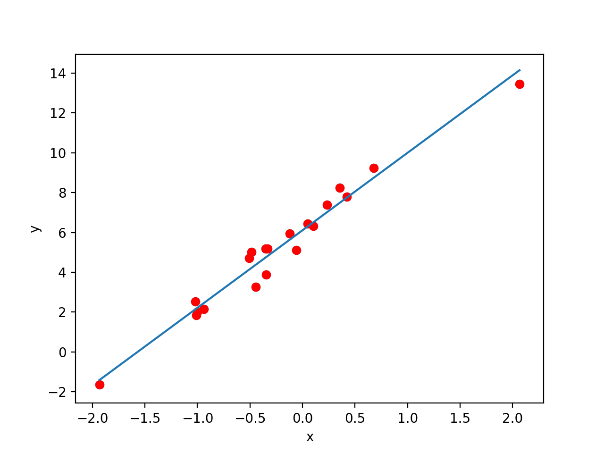

Day 1: Demystifying Neural Networks Part 1
Introduction
Neural networks are a class of machine learning algorithms that have, in the last decade, been responsible for most of the major advances in the field of Artificial Intelligence. They are commonplace in many of the large corporations - from voice assistants such as Google Assistant and Siri to recommender systems powering Netflix and Amazon. The availabilities of large quantities of data and the rise in computational power are two of the main reasons neural networks have been become so powerful.
In this series of blog posts I aim to demystify the main types of neural networks, and delve into the maths behind these deep learning algorithms. Each post will have roughly the same format:
- Intuition: get an overall feel for why this works
- Maths: delve into the technical side and the maths that makes it work
- Code: a code snippet or two detailing how to implement this and apply this
Linear and Logistic Regression
Intuition:
Often when we have a set of data points in science, we want to draw a straight line of best fit through the points. Linear Regression involves learning this straight line of best fit, only with more dimensions - instead of axes \(x\) and \(y\), we have axes \(x_1, x_2, ... ,x_n\) and \(y\).
In Linear Regression, we use this straight line of best fit and the values for \(x_1, x_2, ... ,x_n\), which we call input features to predict the value of the output \(y\). This is useful in tasks where the output is a real number and varies, e.g. housing prices.
Now instead of a real number output, suppose we wanted to classify this input as one of two classes e.g. fraudulent vs non-fraudulent credit card data. Logistic Regression involves taking this output and applying a decision function to this - we end up with a probability - if close to 1 the input is one class, and if closer to 0 the input is the other class. We can think of this probability as the "confidence" the algorithm has.
Maths:
The equation for linear regression extends naturally from the equation of a straight line: $$ y= mx + c$$ Just like how m is the gradient of the line, we assign weights to the input features - let \(w_i\) denote the weight corresponding to feature \(x_i\) - you can loosely think of \(w_i\) as the gradient of the line in the direction of the \(x_i\) axis. So the equation for linear regression is: $$y = \sum_{i=1}^{n}{w_ix_i} + b $$ For logistic regression, we apply the sigmoid function \(\sigma(x)\) to this output - this scales the values to between 0 and 1 (to get the probability): $$ \sigma(x) = \frac{1}{1+e^{-x}}$$ $$ y= \sigma(\sum_{i=1}^{n}{w_ix_i} + b) $$Code:
We will be writing the code snippets in Python and we are using Numpy (a linear algebra library) to carry out the maths operations.
import numpy as np #we use numpy to do the maths operations
x = np.array([1,1,0,0]) # the input
#initialise weights and bias to random values
# we'll get to training them later in the series
w = np.random.random_sample(x.shape) #same length as x
b = np.random.randn()
#Linear Regression
y_linear = np.dot(x,w) + b #this performs the vector dot product
#Logistic Regression
def sigmoid(x):
return 1.0/(1+np.exp(-x))
y_logistic = sigmoid(y_linear)
Conclusion: The Neuron
Congratulations for making it this far - if you've followed this, then you've actually understood the neuron. The neuron is a special logistic regression unit that is the building block of neural networks.The only difference is that neurons can have different activation functions \(f(x)\) e.g. a neuron could use the \(tanh(x)\) activation function instead of the \(\sigma(x)\) activation function used in logistic regression. The output ("prediction") of the neuron is denoted \(a\) - in future we'll reserve \(y\) to denote the correct output value. So the equation for a neuron is $$ z= \sum_{i=1}^{n}{w_ix_i} + b$$ $$ a = f(z)$$ In the next post we will look at how we can combine these neurons to get a neural network!